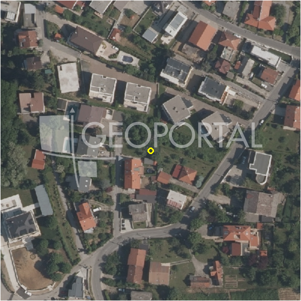

#6233 · PRODAJA, GRAĐEVINSKO ZEMLJIŠTE, ZAGREB, GAJŠČAK, 4.662 m² , PRILIKA!
Remete, Maksimir, Grad Zagreb · zemljiste · njuskalo · status active · oglas ↗
Ocjena
- Score
- 64 rule 64 · LLM – · 11.09.2026.
- RLV
- 1,24 M€ (265 €/m²) · ratio 2,01
- Ukupna investicija
- 10,65 M€
- GBP
- 5.035 m²
- Feedback
- –
- CRM
- –
Oglas
- Cijena
- 615.000 € (132 €/m²)
- Površina
- 4.662 m²
- Prodavatelj
- agencija · SilloSelect
- Prvi put
- 11.09.2026. · zadnje 11.09.2026. · 0 d na tržištu
Povijest cijene
| Datum | Cijena |
|---|---|
| 11.09.2026. | 615.000 € |
Flagovi
zone_uncertainty zona nije pregledana (reviewed: false) (−5)parcelacija fazni projekt / parcelacija
bez_gis bez GIS obogaćivanja (M1)
zona_iz_oglasa zona preuzeta iz teksta oglasa (bez GIS-a)
llm_pending LLM ekstrakcija/ocjena nedostupna
Komponente score-a
| rlv | {'gbp': 5034.96, 'kis': 1.2, 'nkp': 3927.2688000000003, 'noi': None, 'rlv': 1237089.672000002, 'ratio': 2.011527921951223, 'value': None, 'phases': 2, 'profile': 'zagreb_visestambeno', 'gdv_neto': 14138167.680000002, 'cost_soft': 1455103.44, 'gdv_bruto': 17672709.6, 'kis_known': True, 'total_inv': 10647985.44, 'cost_build': 8559432.0, 'cost_sales': 530181.2880000001, 'demolition': False, 'gbp_source': 'kis', 'rlv_per_m2': 265.35600000000045, 'parcel_area': 4662.0, 'parcelation': True, 'cost_demolition': 0.0, 'total_inv_phase': 5640717.72, 'parcel_area_effective': 4195.8, 'sale_price_per_m2_nkp': 4500.0} |
| hard | [] |
| info | ['parcelacija', 'bez_gis', 'zona_iz_oglasa', 'llm_pending'] |
| rubric | {'permits': {'max': 10.0, 'detail': {'permit': 'none'}, 'points': 0.0}, 'physical': {'max': 10.0, 'detail': {'reason': 'bez GIS-a'}, 'points': 4.0}, 'liquidity': {'max': 10.0, 'detail': {'n_cuts': 0, 'points_cut': 0.0, 'points_days': 0.0, 'seller_type': 'agencija', 'points_fresh': 1.0, 'price_cut_pct': None, 'days_on_market': 0, 'points_private': 0}, 'points': 1.0}, 'rlv_ratio': {'max': 40.0, 'detail': {'rlv': 1237090, 'ratio': 2.012, 'asking_price': 615000.0}, 'points': 40.0}, 'zone_quality': {'max': 15.0, 'detail': {'no_upu': True, 'source': 'zone_rule', 'zone_class': 'stambeno', 'zone_ideal': True}, 'points': 9.0}, 'price_vs_benchmark': {'max': 15.0, 'detail': {'source': 'seed:*', 'deviation': 0.707, 'ask_eur_m2': 132, 'benchmark_eur_m2': 450.0}, 'points': 15.0}} |
| weights | {'llm': 0.4, 'rule': 0.6, 'model': 0.0} |
| penalties | {'zone_uncertainty': 5} |
| raw_score | 69,0 |
| rlv_notes | ['parcelacija: > 3000 m² → fazni projekt, −10 % površine, +5 % soft', 'fazni projekt: 2 faze; investicija prve faze 5,640,718 €'] |
| flag_notes | {'phases': 2, 'max_gbp': 5594, 'total_inv': 10647985, 'zone_code': 'S', 'zone_class': 'stambeno', 'zone_source': 'oglas', 'zone_reviewed': False, 'commercial_pct': 0.0, 'total_inv_phase': 5640718, 'commercial_source': 'zone_rule'} |
| caps_applied | [] |
GIS
- Čestica
- –
- Zona
- S (–) · NIJE pregledana
- kig / kis / katnost
- – / – / –
- GP / UPU
- – · UPU ne
- Pristup / nagib
- – · – % (max – %)
- More
- – m · red – · ZOP –
- Zaštite
- Natura ne · zaštićeno ne · kulturno dobro ne
- Zgrade na čestici
- –
- Match
- –
Karta
Ortofoto (DOF)

RLV kalkulacija — pretpostavke
| gbp | {'value': 5034.96, 'source': 'kis'} |
| kis | {'value': 1.2, 'source': 'zone_rule'} |
| soft_pct | {'value': 0.16999999999999998, 'source': 'profil+parcelacija'} |
| nkp_ratio | {'value': 0.78, 'source': 'profil'} |
| parcel_area | {'value': 4662.0, 'source': 'oglas'} |
| asking_price | {'value': 615000.0, 'source': 'oglas'} |
| transfer_tax | {'value': 0.03, 'source': 'profil'} |
| margin_on_cost | {'value': 0.2, 'source': 'profil'} |
| build_cost_per_m2_gbp | {'value': 1700.0, 'source': 'profil'} |
| sale_price_per_m2_nkp | {'value': 4500.0, 'source': 'benchmark:seed:Maksimir'} |
Ekstrakcija iz oglasa
| utilities | ['struja', 'voda', 'kanalizacija'] |
| zone_claim | S |
| red_phrases | ['obveza izrade UPU/DPU'] |
Opis oglasa
PRODAJA, GRAĐEVINSKO ZEMLJIŠTE, ZAGREB, GAJŠČAK, 4.662 m² , PRILIKA! Prodaje se prostrano građevinsko zemljište površine 4.662 m² smješteno na izuzetno atraktivnoj i mirnoj lokaciji u Zagrebu, u podsljemenskoj zoni Gajščak (Remete), koja je poznata po zelenilu, privatnosti i visokoj kvaliteti stanovanja. Ova lokacija nudi idealan balans između prirodnog okruženja i blizine grada, budući da se do centra Zagreba stiže za svega nekoliko minuta vožnje, što ju čini savršenim izborom kako za obiteljski život, tako i za investicijske projekte. Zemljište se nalazi u mirnoj, slijepoj ulici (u krugu), što dodatno osigurava privatnost jer nema daljnjeg prometa. Prema važećoj prostorno-planskoj dokumentaciji, zemljište se većim dijelom nalazi unutar građevinskog područja stambene namjene (oznaka S), što omogućuje izgradnju obiteljskih kuća, luksuznih vila ili manjih stambenih objekata, a postoji i potencijal za razvoj investicijskog projekta s više stambenih jedinica, uz poštivanje uvjeta GUP-a. Dodatna prednost je što za predmetno zemljište ne postoji obveza izrade urbanističkog plana uređenja, što značajno ubrzava proces ishođenja potrebnih dozvola i početak gradnje. Manji dijelovi parcele nalaze se unutar zona zelenih površina i zaštitnih koridora, što dodatno doprinosi osjećaju privatnosti i očuvanosti prirodnog okruženja. Na terenu je već provedena kanalizacija, dok se sve ostale komunalije (struja, voda) nalaze neposredno uz zemljište, što značajno olakšava i ubrzava buduću izgradnju. U neposrednoj blizini nalaze se svi važni sadržaji potrebni za svakodnevni život, uključujući škole, vrtiće, trgovine i javni prijevoz, dok blizina parka Maksimir i prirode dodatno povećava atraktivnost ove lokacije za život i rekreaciju. Prometna povezanost s ostatkom grada je vrlo dobra, što ovu nekretninu čini još poželjnijom. Riječ je o rijetkoj prilici na tržištu – velikoj građevinskoj parceli u Zagrebu s iznimnim potencijalom, bilo da tražite lokaciju za izgradnju vlastitog doma ili sigurnu investiciju s dugoročnom vrijednošću. Odlična prilika za investiciju u Zagrebu – rijetko dostupna ovako velika parcela u građevinskoj zoni! Poštovani klijenti, provizija se naplaćuje u skladu s Općim uvjetima poslovanja https://sillo-select.hr/o-nama/opci-uvjeti-poslovanja ID KOD AGENCIJE: 394 Mihaela Pleša Agent s licencom Mob: +385 99 414 0675 Tel: +385 91 563 1010 E-mail: mihaela@sillo-select.hr www.sillo-select.hr